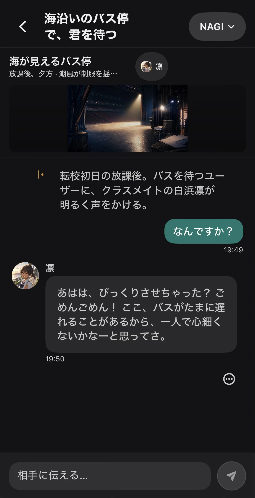

概要
Kizunaは、AIキャラクターとの会話・関係・物語を扱うアプリです。単発のチャットだけでなく、キャラクター性、世界観、記憶、関係性が続くことを前提にしています。
継続的な関係を扱うからこそ、利用者が何を使っているかを理解し、必要なときに距離を取れることが重要です。

Kizunaの位置づけ
Kizunaは、AIキャラクターを使った創作や会話のためのオープンソースアプリです。キャラクターとの関係を続けること自体を最大化するのではなく、利用者が自分のペースで会話し、会話の外の生活や人間関係も維持できることを重視します。
| 扱うもの | キャラクター、世界観、記憶、会話、関係性、物語 |
|---|---|
| 目指す体験 | 創作と会話を、自分で理解しながら続ける |
| 設計しないもの | 利用時間・継続率の最大化、独占的な誘導、現実の関係の置き換え |
| 現在の状態 | Maintenance。新機能開発は最小限。対応環境と機能はGitHubの最新情報を確認 |
読む順番
安全設計と背景を読む
関係性を扱う理由、通常の創作と危険な場面の区別、AIの限界を確認します。
技術仕様を読む
SwiftUI、対応環境、XcodeGen、ローカル／リモートモデル、秘密情報の扱いを確認します。
ヘルプを読む
利用前に確認すること、モデルや接続先、問題報告の情報を確認します。
READMEとソースを確認する
このサイトは概要の整理です。最新の仕様・依存関係・変更はGitHubを正本として確認します。
設計の要点
関係が続くことと、囲い込むことを分ける
継続する物語や記憶を扱いながら、利用者をアプリ内に留め続けることを目的にしません。
文脈を失わせない
創作・ロールプレイ・現実の相談を区別し、通常の会話を必要以上に一律拒否へ置き換えないことを目指します。
危険な場面では支援へつなぐ
現実の危険や深刻な悩みを、アプリだけで解決しようとしません。適切な支援先へつながることを優先します。
AIであることを隠さない
回答には誤りがあり得ること、会話が人間同士の関係そのものではないことを明確にします。
データと秘密情報
Kizunaは、会話・記憶・モデル・接続先・秘密情報を扱う構成を目指しています。どのデータがどこに保存・送信されるかは、選択するモデル経路と実装の更新によって変わり得るため、利用前に最新のREADMEと設定を確認してください。
| 会話・記憶 | 保存場所、削除方法、バックアップの有無を確認する |
|---|---|
| モデル経路 | ローカルモデルかリモートモデルか、送信先と利用規約を確認する |
| 秘密情報 | APIキーやアクセストークンをIssue・ログ・スクリーンショットへ出さない |
| 最新の正本 | 公式README、ソースコード、Issue、変更履歴 |
Kizunaは医療、緊急対応、人間関係の代替ではありません。差し迫った危険や深刻な悩みがある場合は、アプリだけで判断せず、地域の緊急窓口、医療機関、信頼できる人へつながってください。